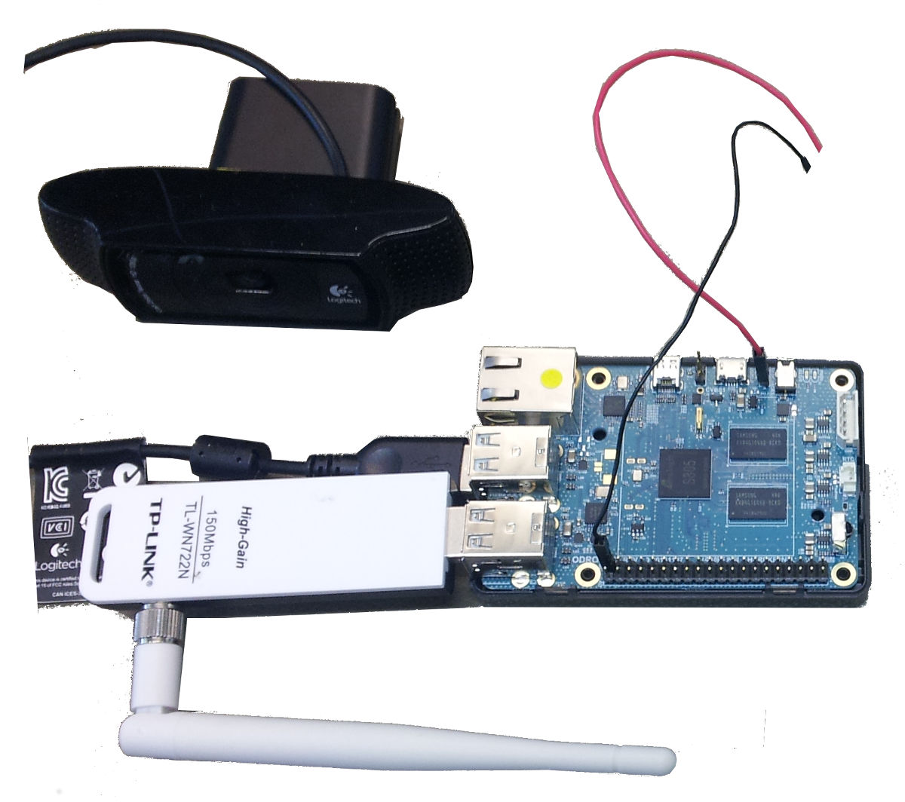
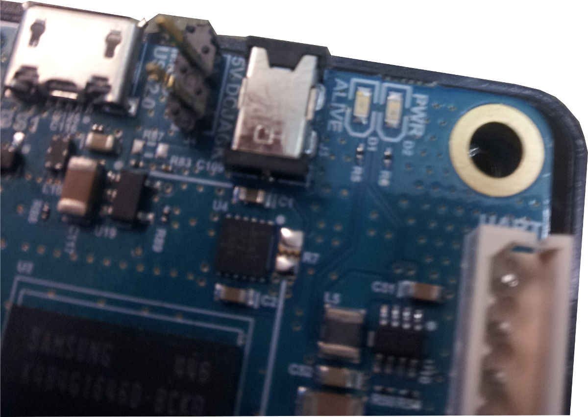
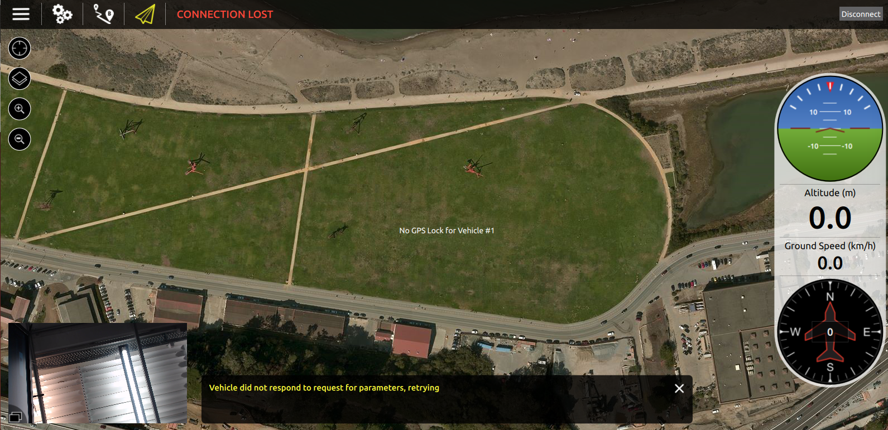

QGroundControl 中的视频流
此页演示如何设置相机 (logitech c920) 和机载计算机 (odroid c1), 以便通过 odroid c1 将视频流传输到网络计算机, 并显示在 QGC 中。
下图显示了整个硬件设置。 它由以下部分组成:
- Odroid C1
- Logitech 摄像头 C920
- WiFi 模块 TP-LINK TL-WN722N

在 Odroid c1 中安装 Linux 环境
要安装 linux 环境 (ubuntu 14.04), 请按照 Odroid c1 教程 中给出的说明进行操作。 在本教程中, 它还演示了如何使用 uart 电缆访问 odroid c1, 以及如何建立以太网连接。
设置备用电源连接
Odroid c1 可以通过 5v 直流插孔供电。 如果 Odroid 被安装在飞行器上，建议将两个跳线通过插片式的方法焊接在电路上 在例子中，Odroid C1 通过在上图所示的红色跳线连接 DC 电源 (5 V) 和通过上图所示的黑色跳线连接地线被通电。

为 Odroid C1 启用无线网络连接
在这篇教程中使用的是 WiFi 模块 TP-LINK TL-WN722N. 要为 odroid c1 启用 wifi 连接, 请按照 Odroid c1 教程 中描述的步骤, 在 "用天线建立 wifi 连接" 一节中进行操作。
配置 WiFi 为接入点
本节演示如何设置 odroid c1, 使其成为接入点。 The content is taken from the pixhawk.org "access point" tutorial (no longer available) with some small adaptions. 为了能够通过 odroid c1 将视频从相机流式传输到在计算机上运行的 QGroundControl, 并不一定需要遵循此部分。 但是, 这篇教程的意义是, 将 odroid c1 设置为接入点允许以独立的方式使用该系统。 在此使用的是 TP-LINK TL-WN722N。 在随后的步骤中, 假定 odroid c1 将 wlan0 的名称分配给您的 wifi 模块。 如果不同, 请将所有出现的 wlan0 更改为相应的接口 (例如 wlan1)。
配置机载电脑为接入点
有关更深入解释, 请查阅 RPI-Wireless-Hotspot
安装必要的软件
sudo apt-get install hostapd udhcpd
配置 DHCP 编辑文件 /etc/udhcpd.conf
start 192.168.2.100 #这是热点将为客户端设备提供的IP范围。
end 192.168.2.200
interface wlan0 # 设备 uDHCP 侦听。
remaining yes
opt dns 8.8.8.8 4.2.2.2 # 客户端会使用的 DNS 服务器（如果路由通过以太网链接）。
opt subnet 255.255.255.0
opt router 192.168.2.1 # wlan0 上的机载计算机的 IP 地址， 也就是我们稍后会设置的。
opt lease 864000 # 10 天 DHCP 租约时间，以秒为单位
其他“opt”命令不应该被配置。如果您知道自己在做什么，则配置其他命令。
编辑如下文件 /etc/default/udhcpd，修改其中的一行：
DHCPD_ENABLED="no"
至
#DHCPD_ENABLED="no"
您需要为机载计算机配置静态 ip 地址。 编辑文件 /etc/network/interfaces 并将 iface wlan0 inet dhcp (或者 iface wlan0 inet manual) 行改为:
auto wlan0
iface wlan0 inet static
address 192.168.2.1
netmask 255.255.255.0
network 192.168.2.0
broadcast 192.168.2.255
wireless-power off
禁用原始 (WiFi Client) 自动配置。 更改行 (它们可能不会全部相邻, 甚至可能根本不存在):
allow-hotplug wlan0
wpa-roam /etc/wpa_supplicant/wpa_supplicant.conf
iface default inet dhcp
至:
#allow-hotplug wlan0
#wpa-roam /etc/wpa_supplicant/wpa_supplicant.conf
#iface default inet dhcp
If you have followed the Odroid C1 tutorial (originally pixhawk.org) to set up the WiFi connection, you might have created the file /etc/network/intefaces.d/wlan0. 请注释掉该文件中的所有行，以使这些配置不再有效。
配置HostAPD：要创建受WPA保护的网络，请编辑文件 /etc/hostapd/hostapd.conf（如果它不存在则创建它）并添加以下行：
auth_algs=1
channel=6 # 要使用的通道
hw_mode=g
ieee80211n=1 # 802.11n 假设你的设备支持它
ignore_broadcast_ssid=0
interface=wlan0
wpa=2
wpa_key_mgmt=WPA-PSK
wpa_pairwise=TKIP
rsn_pairwise=CCMP
# 更改至正确的驱动
driver=nl80211
# 如果需要的话，把下面两项改成别的名字和密码
ssid=OdroidC1
wpa_passphrase=QGroundControl
更改 ssid=, channel=, 和 wpa_passphrase= 。 SSID是广播到其他设备的热点名称，频道是热点运行的频率，wpa_passphrase 是无线网络的密码。 有更多选项，请参阅该文件 /usr/share/doc/hostapd/examples/hostapd.conf.gz。 寻找该区域未使用的频道。 您可以使用 wavemon 等工具。
编辑如下文件 /etc/default/hostapd ，修改其中的一行：
#DAEMON_CONF=""
至:
DAEMON_CONF="/etc/hostapd/hostapd.conf"
您的板载计算机现在应该有无线热点。 要使热点在启动时启动，请运行以下附加命令：
sudo update-rc.d hostapd enable
sudo update-rc.d udhcpd enable
这足以让板载计算机作为接入点出现，并允许您的地面站连接。 如果您真的希望将其作为真正的接入点（将WiFi流量路由到板载计算机的以太网连接），我们需要配置路由和网络地址转换（NAT）。 在内核中启用端口转发：
sudo sh -c "echo 1 > /proc/sys/net/ipv4/ip_forward"
要做到这一点，请运行以下命令：
sudo iptables -t nat -A POSTROUTING -o eth0 -j MASQUERADE
sudo iptables -A FORWARD -i eth0 -o wlan0 -m state --state RELATED,ESTABLISHED -j ACCEPT
sudo iptables -A FORWARD -i wlan0 -o eth0 -j ACCEPT
要使其永久化，请运行以下命令：
sudo sh -c "iptables-save > /etc/iptables.ipv4.nat"
现在，打开 /etc/network/interfaces 并在文件底部添加以下行:
up iptables-restore < /etc/iptables.ipv4.nat
Gstreamer 安装
要在计算机和Odroid C1上安装gstreamer软件包并启动流，请按照 QGroundControl README 中给出的说明进行操作。
如果您无法使用 uvch264s 插件启动 odroid 上的流, 您也可以尝试使用 v4l2src 插件启动它:
gst-launch-1.0 v4l2src device=/dev/video0 ! video/x-h264,width=1920,height=1080,framerate=24/1 ! h264parse ! rtph264pay ! udpsink host=xxx.xxx.xxx.xxx port=5000
其中 “xxx.xxx.xxx.xxx” 是QGC运行的IP地址
如果出现系统错误:
Permission denied, 则可能需要在上述命令之前加上sudo。 或者, 将当前用户添加到video组, 如下所示 (然后注销/登录):sh sudo usermod -aG video $USER
如果一切正常, 您应该在 QGroundControl 的飞行模式窗口中看到左下角的视频流, 如下面的屏幕截图所示。

如果您单击视频流, 卫星地图将显示在左下角, 视频将显示在整个背景中。